SALONOTE ／ デザインコンペ（主要 4 画面）／ 2026-10-10 第 2 稿
デザインコンペ比較
社内案と、世界有数の UI/UX 制作会社 3 社（架空）の提案を、要求定義の重要要件で比べたもの。各社とも同じ依頼書・同じダミーデータで、ホーム（今日）・施術後の記録・顧客詳細・今月の数字の 4 画面を作っている。第 2 稿は、機能・記録の持ち方・API を今の要件定義書と同じにそろえ、違うのはコンセプト・画面の組み立て・並び順・トンマナだけ（第 1 稿にあった「話して直す」「AI が質問に答える」などの要件に無い機能は外した）。今月の数字は 2 段目の画面（SCR-28）。見た目は各案のページで確かめてほしい。
4 つの案
画面ごとに 4 案を並べる
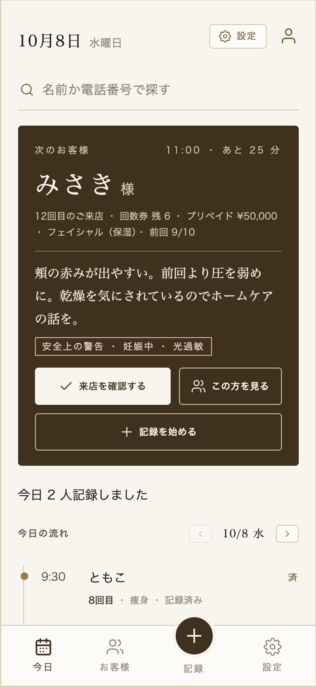
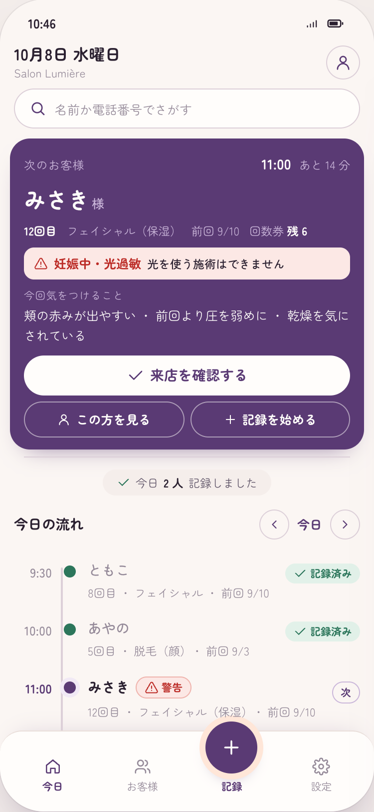
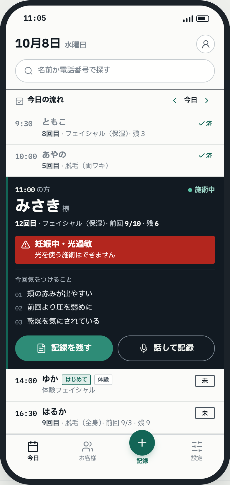
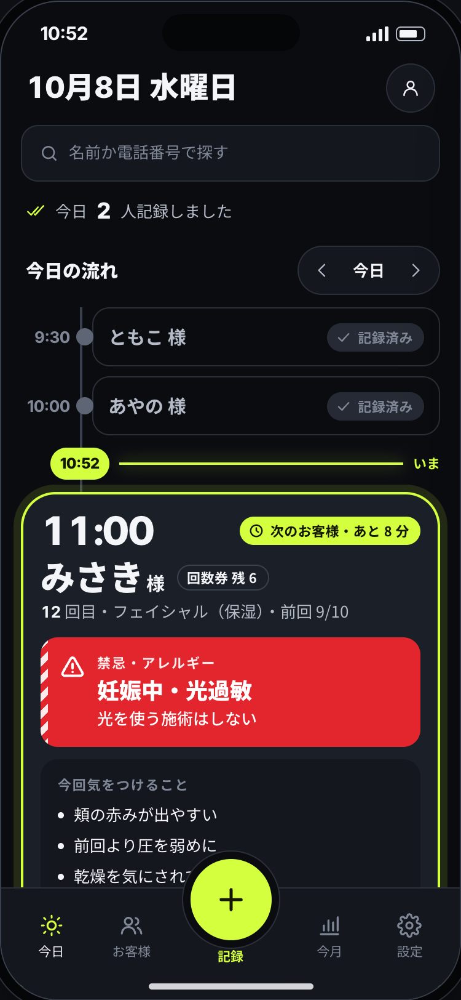
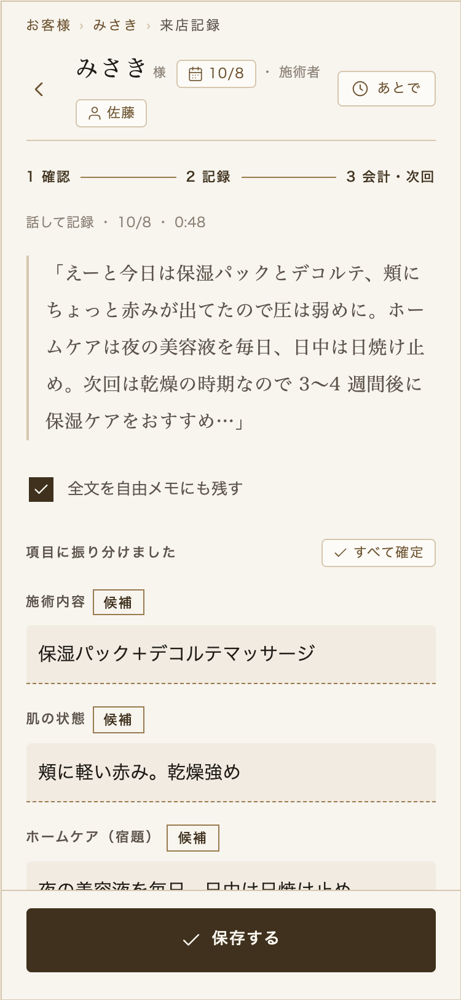
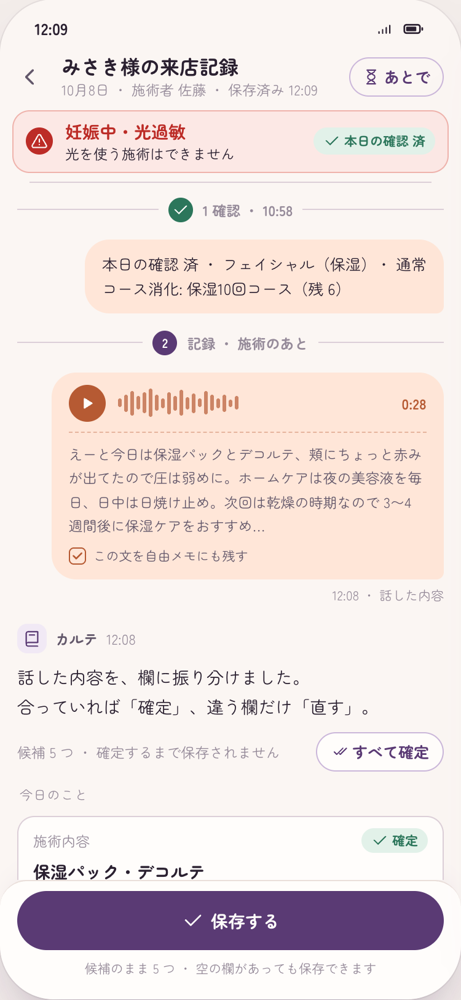
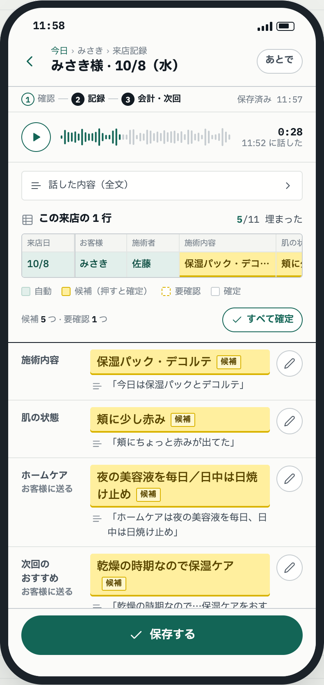
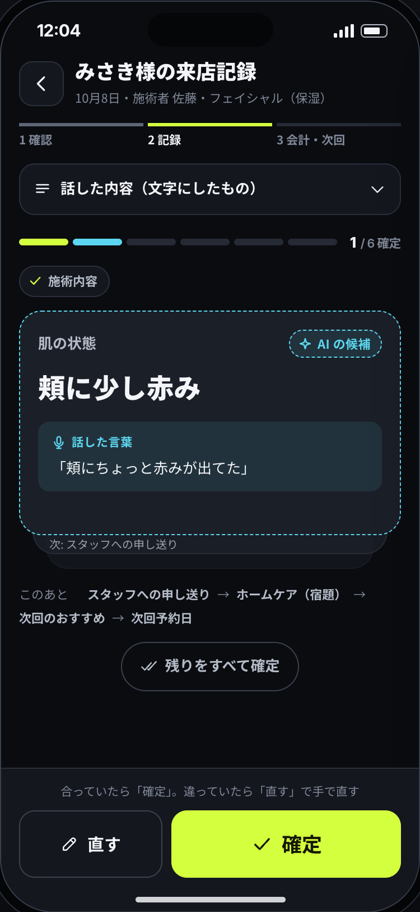
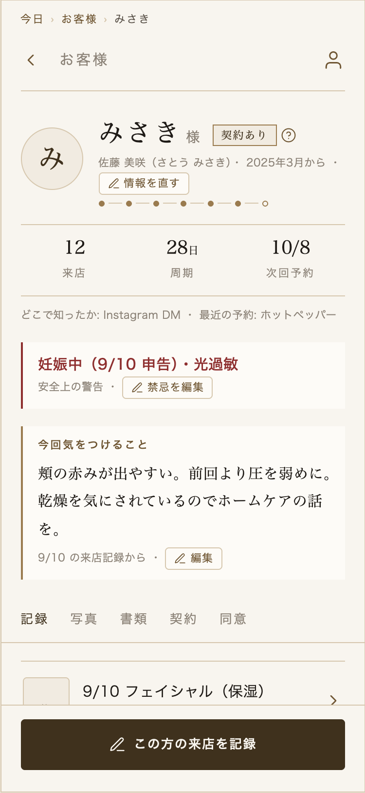
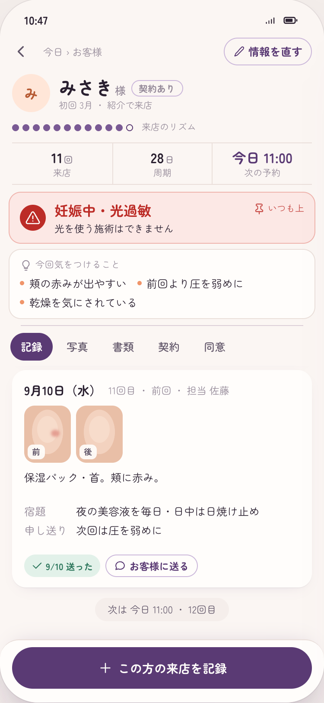
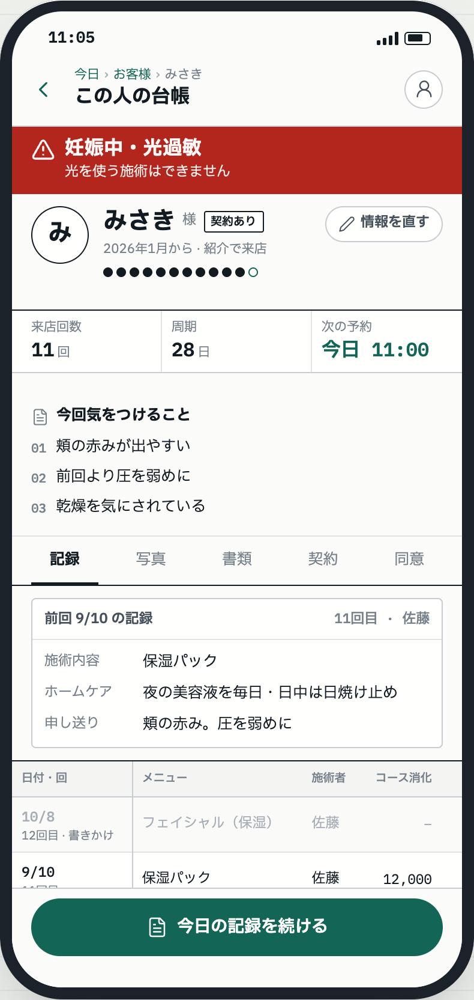
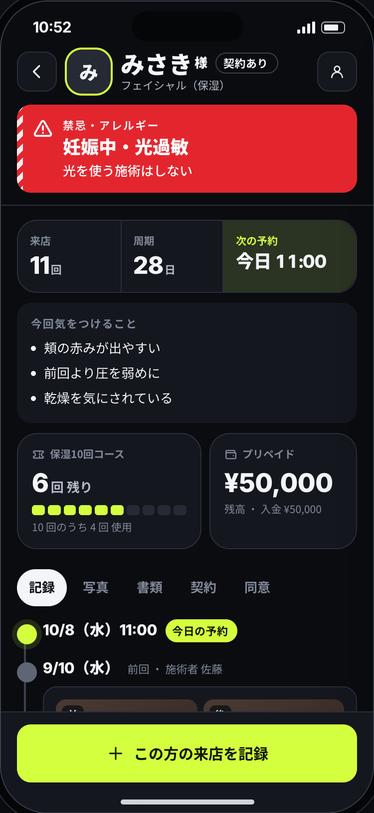
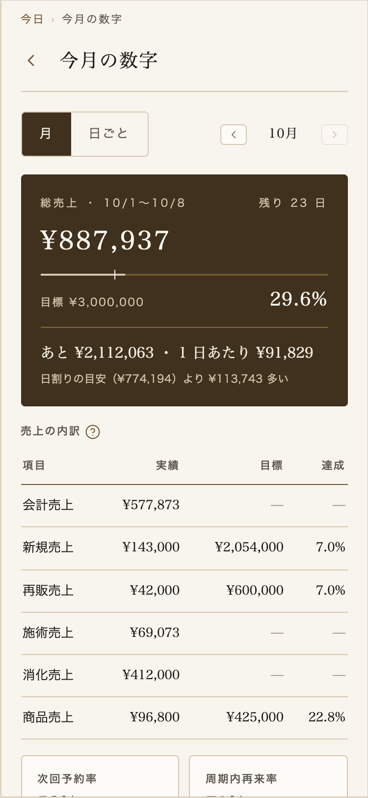
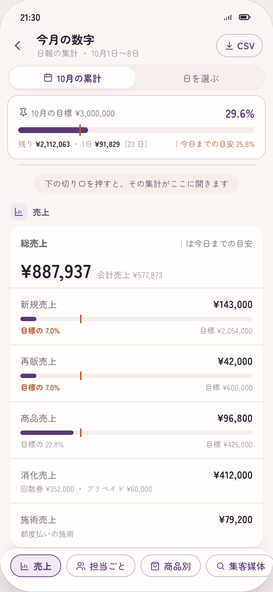
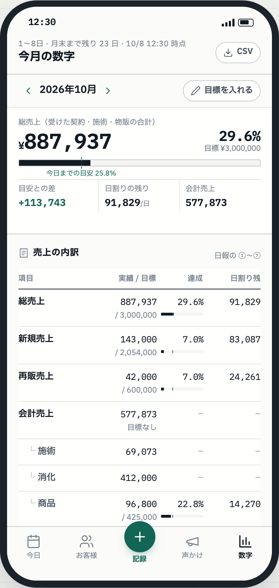
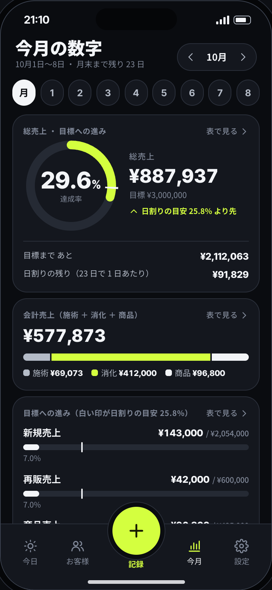
重要要件ごとの比較
◎とても強い ○十分 △工夫が要る （宮崎側での評価案。決めるのは、あすみちゃんと宮崎さん）
| 要件 | 社内案（瞬間起点） | A 社（話しかけるカルテ） | B 社（生きている日報） | C 社（NOWLINE） |
|---|---|---|---|---|
| 1. 入力しない話す・撮るだけで記録、確認は 1〜2 分、片手 | ○候補欄と全文の引用、「すべて確定」。記録は 3〜4 画面に分かれ、タップは多め | ◎自分の声（右）に候補（左の点線）が返り、「確定」か「直す」を押すだけ。流れが LINE と同じ | ○候補を押して確定、会計は日報と同じ形の行。項目は多めに見える | ◎候補を 1 枚ずつ確定、残りはまとめて確定。操作は親指の届く下半分 |
| 2. 見落とさない禁忌・アレルギーが必ず目に入る | ○次のお客様のカードと顧客詳細の上部に警告。警告の色は 1 つだけ | ◎赤い帯を会話の上に固定し、確認しても消えない | ◎赤は禁忌の帯だけ。次のお客様の行に割り込み、閉じられない | ◎赤は禁忌だけ。顧客詳細では名前と一緒に上に固定 |
| 3. 今日が一目でわかる今日来る人と、あとでやること | ○濃いカードの次のお客様、今日の流れ、「あとで」 | ○次のお客様をピン留めし、今日の流れを 1 本の線と点で | ○今日の流れを罫線の表に。次のお客様の行だけが広がる | ◎今の時刻の線の上に済んだ人、すぐ下で次のお客様だけが開く |
| 4. 分析しやすい今月の数字（SCR-28・2 段目） | ○濃いカードに総売上と日割り、下に表。社内の部品だけで組んでいて、そのままモックに移せる | ○目標と日割りを上に固定し、7 つの切り口を押すとその集計へ移る。1 画面で全部は見渡せない | ◎日報の ①〜⑦ と同じ並び。目標・日割りの残りが行ごと。棒を押すとその日の日報 | ○リングと帯で今月がすぐ読める。細かい比較は表を開いてから |
| 5. アナログな人が初日から使える専門用語なし・迷わない | ○落ち着いた画面と場面ごとの入口。11px の字と細い線が多いのは弱み | ◎LINE と同じ見た目と読み方（右＝自分、左＝候補、上＝警告） | △日報をつけている人には読みやすいが、そうでない人には表が重い | △黒地は好みが分かれる。明るい表示への切り替えが要る |
| 6. AI は候補を出すだけ候補と根拠が分かる | △根拠は全文の引用が 1 つで、欄ごとには結びついていない | ◎点線＝候補・実線＝確定。候補ごとに話した言葉の引用 | ◎候補のセルの下に話した言葉の引用。確定すると黒い文字に | ◎カードごとに話した言葉の引用。次回予約日は選ぶまで確定できない |
| 7. お客様に届けるLINE 文面をコピー | ○保存の後に吹き出しとコピー | ○保存すると文面。よく使う文面と商品のアフターフォロー文を選べる | ○完了の後に文面のチップ・アフターフォロー文・コピー後の案内 | ○完了の後に文面とコピー後の案内（名前の確認・送信取消） |
| 作る手間初版の実装の重さ | ◎今の設計書とモックがこの案に沿っている | △画面をトークの流れとして組み直す。部品の作りが今と大きく違う | ○表が中心で作りは素直。スマホで表を読ませる工夫（列の固定）が要る | △今の線・カードの開閉・ダークと明るい表示の切り替えなど、動きの作り込みが多い |
| 今月の数字の置き場所2 段目の画面をどこから開くか | 社内案と A 社は下部タブを初版の 4 つのまま、B 社は「声かけ・数字」、C 社は「今月」を足した 5 つのタブを案にしている。置き場所は画面仕様（03）で決める | |||
宮崎側の見立て
どれか 1 案を丸ごと採るより、「強いところ」を組み合わせるのが合いそう。あすみちゃんの言う「カルテが一番」「日報の上の集計があれば置き換えられる」「業界はアナログ」を全部満たす案は、単独では無い。
- 今月の数字は B 社（生きている日報）の並び。日報と同じ ①〜⑦ と目標・日割りの残りが行ごとに揃い、棒を押すとその日の日報が出る
- 施術後の記録は C 社の「1 枚ずつ確定」か A 社の「確定／直す」。どちらも候補ごとに根拠の引用が付き、社内案の弱み（根拠が欄ごとに結びつかない）を解く
- 禁忌の見せ方は「赤は禁忌だけ・上に固定して消せない」を全案共通の決まりにする（A・B・C 社とも同じ考え方）
- 全体の雰囲気と初日のわかりやすさは、社内案か A 社のやさしい見た目。黒地（C 社）は、明るい表示を基本にして暗い表示を選べる形がよい
あすみちゃんに見てほしいこと
- 4 案のうち、生徒さんが「これなら毎日使える」と思えそうなのはどれか（直感でよい）
- 今月の数字は、B 社の「日報と同じ並び」と、C 社の「大きな数字とリング」のどちらが見たい形か
- 施術後の記録は、A 社の「話しかけて返事をもらう」と、C 社の「カードを 1 枚ずつ確定」のどちらがしっくりくるか
- 黒地（C 社）は施術室で使いたいか、明るい画面がよいか